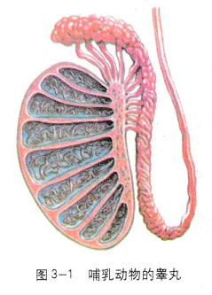
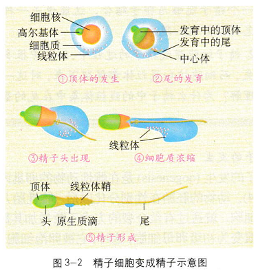
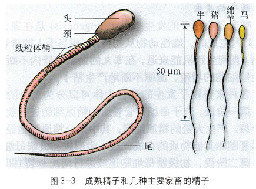
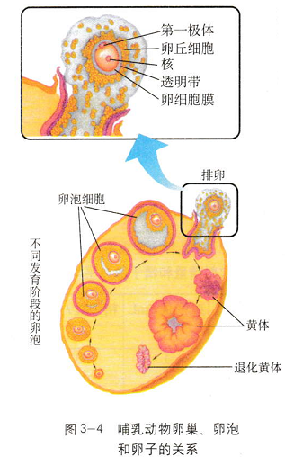

3.1 体内受精和早期胚胎发育
胚胎工程（embryo engineering）的许多技术，实际是在体外条件下，对动物自然受精和早期胚胎发育条件进行的模拟操作。因此，了解哺乳动物受精和早期胚胎发育的规律，就显得十分重要了。
精子和卵子的发生
精子的发生
哺乳动物精子的发生（spermatogenesis）是在睾丸（图3-1）内完成的。雄性动物从初情期（相当于人的青春期）开始，直到生殖机能衰退，在睾丸的曲细精管内不断进行着生殖细胞的增殖，源源不断地产生精子。
各种家畜精子发生的过程大体可以分为三个阶段。
第一阶段，位于曲细精管管壁的精原细胞进行数次有丝分裂，产生大量的精原细胞，其中部分精原细胞经过染色体复制和其他物质的合成，进一步形成初级精母细胞。
第二阶段，初级精母细胞连续进行两次分裂（即减数分裂， 包括MⅠ和MⅡ）；第一次分裂产生两个次级精母细胞，每个次级精母细胞再分裂一次产生两个含单倍染色体的精子细胞。
第三阶段，圆形的精子细胞经过变形（图3-2），其中的细胞核变为精子头的主要部分，高尔基体发育为头部 的顶体，中心体演变为精子的尾，线粒体聚集在 尾的基部形成线粒体鞘。同时，细胞内的其他物 质浓缩为球状，叫做原生质滴，随精子的成熟过 程向后移动，直到最后脱落。对于多数家畜来说 ，精子在睾丸内形成的时间为两个月左右。 哺乳动物成熟的精子外形似蝌蚪，分头、颈 和尾三大部分。不同种动物精子的形态相似，大 小略有不同（图3-3），与动物的体型大小无关。例
如，大鼠的精子190µm长，而大象的精子却只有 50µm长。


卵子的发生
卵子的发生（oogenesis）是在雌性动物的卵巢内完成的（图3-4）。动物的胚胎在性别分化以后，雌性胎儿卵巢内的卵原细胞，就通过有丝分裂的方式不断增加其数量，并进一步演变为初级卵母细胞，这时，它被卵泡细胞包围，形成卵泡。初级卵母细胞需经过减数分裂才能变为成熟的卵子。减数第一次分裂是在雌性动物排卵前后完成的，其结果产生一个次级卵母细胞和第一极体，进入输卵管，准备与精子受精。减数第二次分裂是在精子和卵子结合的过程中完成的，次级卵母细胞经分裂产生一个成熟的卵子和第二极体（图3-5）。当在卵细胞膜和透明带的间隙可以观察到两个极体时，说明卵子已经完成了受精，这是判断卵子是否受精的重要标志。
哺乳动物卵泡的形成和在卵巢内的储备，是在出生前（即胎儿时期）完成的，这是精子和卵子在发生上的重要区别。
小知识
牛刚出生时，每侧卵巢大约含有15万个卵泡，每个卵泡内都有一个初级卵母细胞。出生后能够发育成熟排卵的卵泡只有200个左右，一生产下犊牛4-5头。其他哺乳动物的情况相似，可见哺乳动物一生中卵母细胞的有效利用率很低，这正是胚胎工程要研究解决的问题之一。